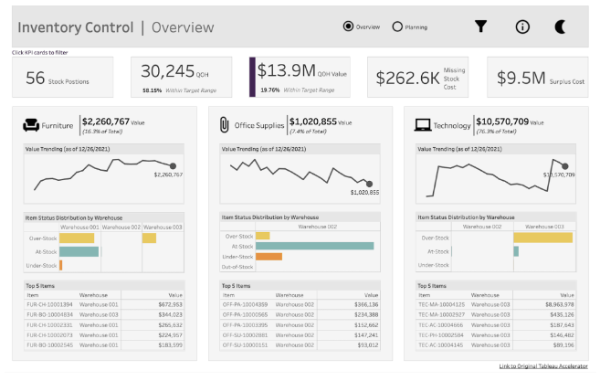

Мой процесс обучения занял 1,5-2 года, конечно можно сильно быстрее, если знать заранее на что обращать внимания, а на что нет. Я начал с питона, освоил на хорошем уровне css + html, попробовал JS, потом посмотрел PHP (прости госпадэ), это турне отняло у меня добрую половину года, зато я понял насколько прекрасен и лаконичен питон, а также понял что это будет мой основной язык. Всю информацию я добывал бесплатно, а на все обучение я потратил не больше 3000р в сумме. Образование у меня гуманитарное.
Месяц назад я получил официальную работу, с белой и большой для джуна ЗП и с офисом в Москва сити. Сразу скажу что мне немного подфартило, я ожидал сильно меньшую ЗП и условия похуже, но как говорится дорога возникает под ногами идущего. Работу я искал 2 месяца, прошел 5-7 собеседований и везде получал отказ по тем или иным причинам.
У меня не было друзей программистов и вообще кого-либо кто хоть как то мог помочь советом, поэтому буду рад поделитьс такими же бедолагами как и я когда то:
1. Знания языка ничего вам не дадут. Это база, от которой можно плясать дальше и не более того, чтоб разобраться в языке и быстро в нем ориентироваться много ума не надо, важно уметь что-то делать на нем, что-то сложное и уникальное, за что можно получать деньги.
2. Исходя из пункта выше вам надо выбрать сперва направление куда вы хотите двигаться, если уж выбрали питон, то тут несколько путей: веб и дата/машинное обучение. Я выбрал первое.
3. Когда выберете направление (что душе ближе, без этого никак), надо будет выбирать фреймворк, наиболее перспективный и набирающий обороты (главное не промахнуться, можете учить что-то устаревшее или умирающее), и долбить его до посинения, а также весь соседний стек технологий. Мой основной стек: Django + DRF.
3.1 Не распыляйтесь. Не надо бегать от фреймворка к фреймворку, от языка к языку, у вас все смешается в голове и ничего кроме геморроя не получите. Это допустимо на первых порах чтоб понять что больше нравится.
4. Сразу расстрою тех кто пришел в программирование за деньгами: у вас ничего не получится. Учиться программировать это пути боли, бесконечной и очень сильной, 95% времени у вас будет ничего не получаться и будет хотеться все бросить, миллион раз вы усомнитесь в своих умственных способностях и что вообще это для вас. Программирование надо любить, без этого никак. Еще большее количество раз вы будете упираться в стены, технологии или вещи которые очень сложные и вы их не знаете, стены надо рушить, без этого никак, по чуть-чуть и по кирпичику.
5. Копите портфолио, освойте гит + гитхаб, делайте свои проекты, на собеседовании 100% их будут спрашивать. Делайте чистые репозитории которые нестыдно показать, будто писали на прод, чтоб все по взрослому.
6. ООП. Будет сложно но надо разобраться, на продакшене все делают через ООП и классы, все стараются не писать лапшу из функций.
7. Алгоритмы и паттерны проектирования. Это надо знать, но сильно упарываться не стоит, посмотрели, ознкомились, поняли и ок. Сидеть месяцами и выдрачивать себя тем чем вам как джуну 99% не пригодится - не стоит. Это придет само и со временем.
8. Без английского тут никуда, вся дока только на англ языке, а материал доступный на русском языке смехотворен, у вас будет получаться находить русские источники, но на первых порах, когда полезет вглубь - вот там и упретесь.
9. Не будет такого момента что обучение когда-либо прекратится. Боль будет всегда, смиритесь или не лезьте сюда. Если боли нет - вы застряли в своем стеке и деградируете, скоро вас сожрут а ваши знания станут неактуальными.
10. Если вы все таки в веб, то вот этот сайт прост must have: https://htmlacademy.ru/ не поленитесь, купите подписку и пройдите все уроки по css. Вы очень быстро и надежно всему научитесь.
11. Выберите себе одну IDE которую будете знать. Сейчас у Pycharm нет конкурентов.
11.1 Изучите дебаггер пайчарма, чем раньше вы это сделаете, тем больше времени съэкономите себе в будущем. Просто тонну времени. Сейчас на работе я не представляю свой день без дебаггера, я делаю там почти все.
12. Пробуйте все руками, прочитать и сделать - 2 большие разницы. То что прочитали не значит что теперь умеете, на практике все будет по другому и идти не по плану. Если хотите в чем то разобраться - пробуйте, прочитали что-то - пробуйте. Практика ваше все.
13. Когда с фреймворком определились, сразу открывайте HH и смотрите вакансии джунов, разберитесь какой стек требуется и цельтесь в него.
14. Не лезьте особо в асинхронщину, по настоящему там разобраться надо много сил и времени. Вам как джуну вряд ли пригодится.
Советы выше - общие, если будет кому интересно по стеку веб разработки на питоне - напишу позже.
Что изменилось: уже 3 месяца как я поменял прошлое место работы и уже устроился в другое место, в аутсорс IT компанию (заказная разработка). Устроился с повышением до мидла. Итого через 10 месяцев после получения первой работы я уже зарабатываю мидловскую зп и не сомневаюсь за свое будущее. Уверен что дальше будет больше. К чему я это написал: для вашей мотивации. Все возможно. Я смог и вы сможете, причем я не считаю себя очень умным, у меня просто было большое желание и я очень старался.
Кстати у меня есть друг, который впечатлился моим успехом и решил повторить путь. Только он пошел по пути JS, став react разработчиком а после перешел в мобильщика на react native. Он смог найти работу спустя чуть больше полу года самообучения, но нормальный контракт он получает только сейчас, спустя еще пол года уже коммерческой разработки, до этого он был на птичьих правах в качестве интерна на низкой ЗП.
А теперь хотел бы дополнить свой предыдущий ответ и добавить то что меня больше всего бустануло а также парочку новых советов.
1) Если вы понимаете что хотите связать свою жизнь с программированием - переходите на Unix как можно раньше. Винда будет вас тормозить как по времени (некоторые базовые вещи там делать просто боль), так и по развитию, но конечно если только вы не c# программист. Если финансы позволяют - купите мак, если нет - потратьте вечерок и накатите убунту. Зачем это надо? Так устроено что весь программистский мир сидит на unix системах, сервера на unix, рабочие машинки тоже. Все инструкции по установке написаны для unix машин (в большинстве случаев ваши установки будут представлять из себя пару команд в консоль), нормальная консоль тоже на unix, плюс от вас как от backend разработчиков рано или поздно потребуются хотя бы базовые навыки администрирования unix серверов. Как же хорошо будет когда вы уже натренируетесь это делать на своих локальных машинах.
2) Устроившись на вашу первую работу вы будете писать плохой код, и таким он вам конечно казаться не будет (по крайней мере первое время). Это конечно плохо, но от этого никуда не деться. Если вы заинтересованы в том чтоб стать лучше, а не остаться на этапе формошлепа, то научившись писать код хотяб как-нибудь я вам КРАЙНЕ советую задаться вопросом а как же его писать вообще правильно? Благо, что этим вопросом задавалось большое программистов и ответы на эти вопрос уже давно есть.
- Роберт Мартин Чистый код. Просто азбука и возглавляет топ 1 всех книг по программированию (не зря). Строго к прочтению. Оттуда вы узнаете что если у ваша функция длиннее 5-10 строк - это провал. Если у вас много комментов в коде - провал. Если вы называете переменные как i, d и прочие понятные только вам сокращения - совсем тотал. Единственный минус это то, что примеры кода на Java. На степик есть неплохой курс по java, я прошел его на половину чтоб понимать примеры из книги. С java можно познакомиться в качестве факультатива, чтоб понимать чем хороши а чем плохи статически типизированные компилируемые языки. Также я бы советовал читать в оригинале. Там очень хороший и понятный английский.
- Рано или поздно придется познакомиться с паттернами GOF (банда 4). Это паттерны проектирования которые решают частые проблемы которые возникают при программировании (вне зависимости от какого-то языка). О паттернах очень хорошо описано тут https://refactoring.guru/ru , но после прочтения вы вряд ли что-то по настоящему поймете. Как и все в программировании - все лежит через практику. Более приближенные к жизни примеры и вообще просто бомбейший канал https://www.youtube.com/c/ArjanCodes , там тоже много о паттернах и вообще очень много полезного по python. Этот канал еще уникален тем, что 95% каналов по программированию это о всем сразу и ни о чем конкретно, галопом по всяким технологиям с максимально широкой аудиторией в виде новичков. Канал выше как раз для тех кто уже прошел первый этап, имеет опыт разработки и хочет стать лучше. Поэтому люто рекомендую в закладки. Но в целом к паттернам рекомендую переходить хотя бы спустя пол года коммерческой разработки в команде, когда вы накопите боли и случаи, применение паттернов в которых решит конкретно вашу проблему и сделает код чище. Надо понимать что python - язык с динамической типизацацей. Он крайне гибок и в какой-то мере прост (относительно других статически типизированных языков). Это чревато тем что он простит и проглотит все, сам язык не накладывает никаких ограничений на ваше творчество и в итоге написать код плохо - очень просто и чаще всего он и будет получаться плохим, отсюда и такая слава python программистов и в частности холивар хорошо ли учить python первым языком программирования.
- Что такое SOLID и GRASP надо знать как отче наш. И не просто знать а прям очень хорошо разобраться с каждым принципом и досконально понимать почему каждый принцип существует и какую проблему решает. Тут никакой источник не порекомендую, я с ними разбирался по ютубу, по куче разных роликов.
3) Если вы захотите как и я расширить кругозор знаний и пойти немного в смежную степь, а конкретнее в ML и нейроночки то тут 2 крутейший источника знаний.
- На степике потрясающий курс по ML от Анатолия (лучший курс на степике) https://stepik.org/course/4852/syllabus
- Книга Тарик Рашид Нейронные сети. Ее мне посоветовал коллега который в ML уже преисполнился и посоветовал мне начать с неё. Эта книга очень небольшая (150 страниц крупного текста) и вызывает просто лютейший восторг. Насколько все понятно, грамотно, последовательно и очень интересно. После неё вы сможете чисто используя numpy и перемножая матрицы строить свои нейронные сети и решать реальные бизнес задачи. Я построил скоринговую модель на реальных данных с высокой accuracy 88%.
4) По поводу ситуации с фреймворками на рынке python backend разработки. Django + DRF все ещё доминирует на рынке, далее идёт flask, и очень бурно и уверенно растёт асинхронный FAST API. За ним, как я думаю, будущее, есть ощущение что он займёт нишу Flask и существенно откусит долю Django. В любом случае изучая асинхронное программирование на python вы не прогадаете.
5) Ещё в изначальном посте я не упомянул об очень важной технологии которая называется celery. На первом месте работы он мне не понадобился от слова совсем, зато на второй он используется очень сильно и вообще, celery является обязательным в 80% вакансии на рынке. Крайне советую с ним разобраться и применить его в своих пет проектах, благо это несильно сложно.
6) На счёт пет проектов. Даже если вы уже устроились на работу и спокойно копите опыт, то петы делать все равно надо. При поиске второго места работы я столкнулся с тем что забросил свой гитхаб и расслабился, при собеседованиях было нечего показать и мне это мешало. Не повторяйте моих ошибок, всегда что-то создавайте и пробуйте новое.
7) Часто на собесах требуют знание голого SQL, может быть мне так везет, но все еще ни разу знание голого SQL мне на работе не пригодилось, за исключением когда надо сделать ssh на север с базой и поисследовать данные через psql, пописав простенькие селекты. Но если захотите бустануться в написании сырых запросов то вот: отличнеший SQL тренажёр (больше курс чем тренажер) на степике https://stepik.org/course/63054/syllabus я прошел уже 2/3 половины и очень доволен.
8) И напоследок просто интересный IT канал с очень классными интервью. В ссылке укажу интервью которое меня впечатлило больше всего, а именно с DDD разработчиком: https://www.youtube.com/watch?v=rkQ3-T82pkU Очень советую тем кто хочет двигаться в сторону правильной архитектуры приложений и чистоты кода в целом.
Ещё один важный момент. Многие заказчики подходят к делу с позиции работодателя. Мол это ты ищешь работу, пришёл к нему, просишь его взять тебя к себе, пытаешься ему понравиться, и он устраивает собеседование. На самом деле ситуация противоположная, и такое отношение заказчика к делу вам придётся переигрывать. У тебя, можно сказать, магазин, в котором продаются услуги. Заказчики стоят в очереди за "товаром". Когда подходит его очередь, начинается процесс купли-продажи. Если ему срочно, извините, предыдущая работа ещё не закончена, встаньте в очередь пожалуйста, гражданин. Какое-такое собеседование? Не задерживайте очередь, пожалуйста.
Ну и как пример, посмотрите вот этих людей https://www.upwork.com/hire/scripts-and-utilities-freelancers/
Средняя стоимость работы у них 50$/час. Некоторые из них выполняют исключительно только те работы, которые может выполнить самый начинающий питонист. Парни из Индии и Пакистана чаще всего имеют такую особенность. Если вы закончили этот курс, то точно сможете выполнить любую из этих работ.
Пишу, спустя полгода. За это время мне в разных местах не однократно задавался подобный вопрос:
Есть такой эффект белого пятна, вот окончил курс, (уже третий), а что дальше?
Отвечаю: дальше делайте полноценный проект. С нуля. Любой. Задачу для проекта ищите на фриланс биржах. И пусть задача будет для начала не сложная.
Примеры:
1. Импортировать карточки товара в интернет-магазин из прайс-листа поставщика.
2. Сделать XML-файл объявлений для сервиса Авито-автозагрузка в соответствии с требованиями сервиса. Входные данные в Excel-таблице.
3. Сделать генератор отчётов в нужном формате из Google-sheets по заданным правилам.
4. Собрать и отсортировать данные с сайта bla-bla.com
5. Сделать парсер для сайта с интерфейсом для отслеживания его работы в реальном времени.
6. Сделать генератор фида товаров для Яндекс Маркета.
И тп. Да мы не знаем, как всё это делать. Да не умеем. Но в этом-то и задача: узнать, как это возможно сделать и реализовать. Задачки на этом курсе мы тоже сначала не знали, как решать. А эти проекты не сложнее таких задач.
* * * * * * * * * *
Как делать полноценные проекты и какие инструменты при этом понадобятся, смотрите вот в этих книгах:
Sweigart Al - Beyond the Basic Stuff with Python: Best Practices for Writing Clean Code - 2020
Jaworski M., Ziadé T. - Expert Python Programming - 2019
Книги на английском. У кого с языком не очень, ищите их в EPUB формате, открывайте в Хроме через плагин EPUB-reader и правой клавишей мыши и камандой "Перевести на русский" переводите. Сейчас translate.google со своей нейронкой переводит очень даже ничего, не хуже некоторых издательств.
Книги знакомят с самым распространённым набором инструметов и технологий, необходимых для профессиональной работы, для создания полноценных проектов. Знакомят поверхностно, без подробностей, но в качестве дорожной карты могут служить вполне.
Берёте книгу, знакомитесь со всеми, описанными там, инструментами подряд, ищите по каждому полную справечную информацию, официальную документацию, или отдельный учебник, и вперёд, дальше грызть этот гранит.
Вот вам и Python Roadmap. А по кривой дороге вперед не видать.
Для решения этой проблемы нашла классическую книгу Роберта Мартина "Чистый код".
=========================================================================================================
2018.11 - начал начальный курс по питону. 2019.04 - закончил начальный и продвинутый курс по Питону (Не все задачи с графами выполнил правда) 2019.05 - закончил курс по введению в ML от А. Карпова 2019.09 - начал искать работу дата-аналитиком. Прошёл около 20 собеседований с сентября по декаьрт.. Порой опускались руки, но начинал вспоминать про пройденный путь) на каждом проваленном собесе просил фидбек - какие слабые стороны мне стоит подтянуть. 2019.12 - за месяц прошёл курс по SQL от Shultais 2019.12 - получил два оффера - из ламоды и ещё одной компании. Пошёл в другую компанию, где условия были чуть получше. Должность - дата аналитик. Зарплата была чуть больше 100. 2020.09 - сменил работу, прибавка к зп примерно 50% 2020.11 - договорился о смене должности с аналитика на дата-инженера. Сейчас планирую изучать джаву. Именно на первой работе удалось получить фундаментальный опыт. С опытом уже в разы лучше чувствуешь себя на рынке.
уровень по программированию Почти нулевой. В школе был турбо паскаль, а в университете - Visual Basic. Из программирования помнил только IF-ELSE и FOR- циклы. Любые вставки кода (python, js) казались абракадаброй. ML это, ведь, больше про математику, чем Питон? Язык здесь только "инструмент", вроде? Да, ML действительно больше про математическую часть. Язык действительно является инструментом, но с Питоном будет комфортнее всего. И, если можно, вкратце - в чем состояла работа дата-аналитика? Тестирование и верификация гипотез с помощью А/Б тестов, визуализация данных (в основном через дашборды в Tableau), постоянные ad-hoc выгрузки из БД для подсчёта метрик (SQL-мастхэв). Питоновские либы: - Подключение к БД (clickhouse, postgresql, spark) - "Шатание" данных (pandas, numpy, statmodels) - Иногда пригождались внутренние либы, вроде itertools Коллеги ещё работали с ML, но лично у меня как-то не срослось с этим. Не исключаю, что потом наверстаю
Ребят, экономьте своё время, используйте рекурсию. В данном случае, рекурсивный алгоритм самый лаконичный. Проще научиться работать с рекурсией и использовать её преимущества, чем избегать использования рекурсии в программах. Очень советую книжку по алгоритмам: Адитья Бхаргава "Грокаем алгоритмы". Там доступным языком объясняются основная идея работы с рекурсией, различные алгоритмы сортировки, обхода графов и не только. Именно, тонкости работы с рекурсией там объяснены очень хорошо.
Ожидания от кандидата:
Обязанности:
Гид по профессии аналитик данных: кто это, чем занимается и сколько зарабатывает
Главная задача аналитика данных — объединить имеющиеся данные, собрать недостающие и интерпретировать полученный массив информации.
Основные рабочие инструменты аналитика — Sublime Text, Jupyter Notebook, Google Sheets или Excel. огромное количество компаний по всему миру строят мощную аналитику на базе таблиц в Excel. Даже несмотря на то, что в их распоряжении есть самые продвинутые технологии. В первую очередь потому, что это доступные и простые инструменты, которые позволяют решать самые сложные задачи. Например, автоматизировать обработку данных в сводных таблицах, формировать листы прогноза, чтобы планировать бизнес-процессы, и даже строить 3D-карты.
Аналитикам данных также приходится писать запросы в базы данных SQL, чтобы получить точечную информацию о процессах или клиентах. Еще нужно работать с BI-системами Tableau, Power BI, Looker Studio, которые агрегируют данные из различных источников. А иногда приходится даже программировать на языках Python, R или Java, чтобы, например, автоматизировать поиск по таблицам, сегментировать их или выявить закономерности.
Вот конкретный кейс: аналитику нужно преобразовать видеопортал, такой как YouTube, в стриминговую платформу — площадку для проведения прямых эфиров. Для этого он:

Приведем другой пример — тепловую карту. Это такой способ визуализации данных, в котором их значения отображаются разными цветами. Ниже тепловая карта c данными по объему спроса в различных геолокациях, собранная в визуальном элементе Azure Maps для Power BI:
Где нужен аналитик данных
Аналитик данных нужен фактически любой компании, где принимаются решения. Дата-аналитики востребованы везде, где есть диджитал-маркетинг: в ретейле, IT, телекоме, здравоохранении. Такие специалисты превращают маркетинг в эффективный инструмент — они помогают точно понять, куда уходят деньги, и получить максимальную прибыль при минимальных вложениях.
Но есть отрасли и направления, где работа аналитика данных особенно важна. Например, банки — сфера, где всегда очень много информации: пользовательские данные, личные и финансовые. При этом управленческие ошибки в банковском секторе очень дороги. Например, если создать неправильную скоринг-модель — алгоритм, который оценивает, стоит ли выдавать клиенту кредит, — можно потерять и деньги, и доверие клиентов.
Аналитик данных: с чего начать обучение
На старте нужно знать, как работать с Excel и Google Sheet, обрабатывать данные с помощью языка SQL и писать сложные SQL запросы, представлять информацию в виде графиков и диаграмм.
После изучения основ аналитики стоит выбрать конкретную отрасль. Здесь может пригодиться прошлый опыт. Если вы были HR-специалистом, можно искать вакансии в сфере HR-аналитики. Работали бухгалтером — выбирайте экономическую и финансовую специфику, основные термины и процессы вам уже будут знакомы.
Аналитик данных и дата-сайентист: в чем разница
Чтобы начать работать аналитиком, не нужно глубоко знать программирование. Но если вы интересуетесь разработкой, есть еще одно возможное направление роста — Data Science.
Дата-сайентист — это эксперт, работающий на стыке бизнес-анализа и машинного обучения. Он обучает нейронные сети и создает прогнозные алгоритмические модели для сложных вычислений: оптимизации бизнес-процессов, научных расчетов. С помощью таких моделей можно, например, предсказывать эффективность рекламных кампаний, создавать новые формулы лекарств и даже изучать космос. Но здесь без знания Python или основ ML уже не обойтись.
Сколько зарабатывает аналитик данных
Если заглянуть на HeadHunter, то разброс зарплат окажется довольно большим. В первую очередь, это связано с опытом работы специалистов и спецификой каждой вакансии.
Например, начинающим специалистам в среднем предлагают от 100 до 150 тыс. рублей.
Мидл- и сеньор-аналитики могут рассчитывать на зарплату от 200 до 400 тыс. рублей в зависимости от опыта и навыков.
На уровень зарплат влияет и регион работы. В Москве специалист уровня мидл, скорее всего, будет получать не меньше 200 тыс. рублей на руки. А в Тюменской области, например, для аналогичной вакансии установлена вилка от 100 до 130 тыс. рублей.
В чем сложности профессии аналитика данных
Хороший аналитик должен не просто собирать данные, но и понимать, для чего он это делает. Его работа поставлять не графики, а то, что следует за ними. Инсайты — вспышки озарения, которые двигают бизнес вперед. Без инсайтов графики остаются просто красивыми картинками.
Для того, чтобы этому научиться, недостаточно просто пройти курсы. Нужно наработать опыт, научиться глубоко погружаться в бизнес и уметь работать с собой — избегать простых обобщений, легких выводов и поверхностных решений. Тогда действительно получится стать не просто специалистом, а настоящим экспертом: ценным, конкурентоспособным и востребованным.
Гид по профессии: Инженер по ручному тестированию
Профессию тестировщика часто выбирают для старта в IT. Многие думают, что ручному тестировщику не нужны серьезные технические знания: сиди и тыкайся в интерфейсы.
Разберемся на примере. У нас есть сайт интернет-магазина, и аналитики решили, что продаж будет больше, если разместить кнопку добавления в корзину под описание товара, покрасить ее в красный цвет и написать на ней «Хочу». Дизайнеры спроектировали макет, а программисты написали код. После этого продукт с обновлением размещается на тестовом стенде — там его и проверяет тестировщик.
Он должен убедиться, что фича реализована именно так, как было поставлено в задаче: кнопка расположена под описанием товара, она именно того красного цвета, который был в макете, текст кнопки верный, а при нажатии на нее товар действительно добавляется в корзину. Все это ручной тестировщик проверяет руками, имитируя действия пользователя.
Часть проверок может быть автоматизирована, но полная автоматизация трудно достижима, поэтому ручное тестирование является обязательным этапом разработки.
Что входит в задачи тестировщика
Рассмотрим подробнее, как выглядит рабочий процесс специалиста по тестированию.
Тестировщик получает задание: проверить приложение или фичу на наличие ошибок.
Для этого ему нужна документация, где подробно описано, что и как должно работать, — тест-кейсы. В идеале тест-кейсы пишутся еще в процессе разработки, часто — непосредственно перед началом тестирования. Однако иногда тест-кейсы пишут и в процессе ручного тестирования, и даже уже после тестирования.
Тестировщик продумывает стратегию тестирования, пишет тест-кейсы и по ним проводит тестирование. Хороший тестировщик постоянно задает себе вопрос: «А что если?» и придумывает новые способы взаимодействия с продуктом.
Важно учесть, тестировщик, как правило, должен проверить не только саму новую фичу, но и весь функционал вокруг нее: часто при внесении изменений в код ломаются соседние, ранее разработанные функциональности. Проверка уже протестированных ранее участков исходного кода после обновлений называется регрессионным тестированием. Это обязательная часть работы ручного тестировщика.
По итогу проведенной проверки составляется отчет. Если все работает корректно, фичу отправляют в прод и представляют пользователям. Если находятся ошибки, то тестировщик возвращает задачи с описанием дефектов разработчикам. И так до тех пор, пока все не начинает работать так, как было описано в задаче. Убедиться, что разработчики исправили найденные баги — тоже обязанность тестировщика.
Какие навыки нужны ручному тестировщику
Сложно согласиться с мнением, что профессия ручного тестировщика не требует особых технических знаний и навыков. Вот лишь часть того, что должен знать и уметь специалист, чтобы качественно выполнять работу:
Кроме этого, начинающий программист на Питоне должен владеть следующими навыками:
Когда новичок всему этому обучится, то он должен глубже изучить тему программирования на Питоне. Представляем стандартный список требований работодателей в дополнение к вышеуказанным:
В зависимости от опыта работы и профессиональных навыков разработчики на языке программирования Python занимают одну из трёх позиций: Junior, Middle и Senior. Расскажем о них чуть подробнее.
Junior-разработчик на Python – это новичок, имеющий опыт программирования от 0,5 до 1 года. На этом этапе специалист должен регулярно изучать Python, а также разбирать код более опытных программистов.
Вот что он должен уметь:
Особенности работы Джуном: